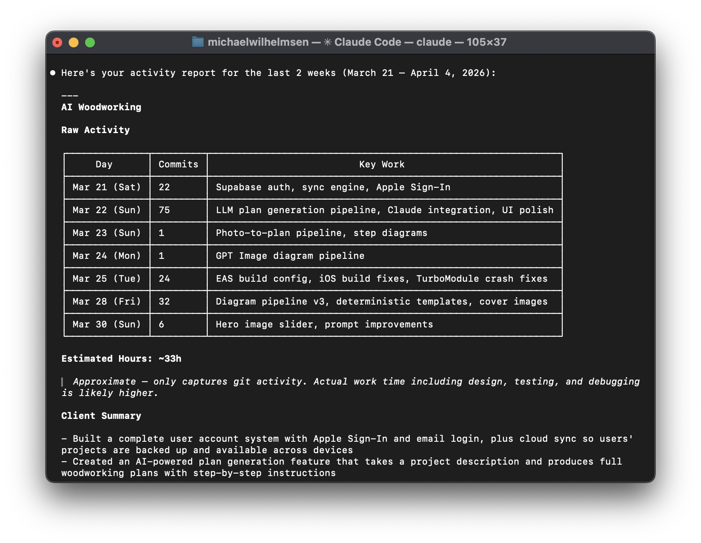
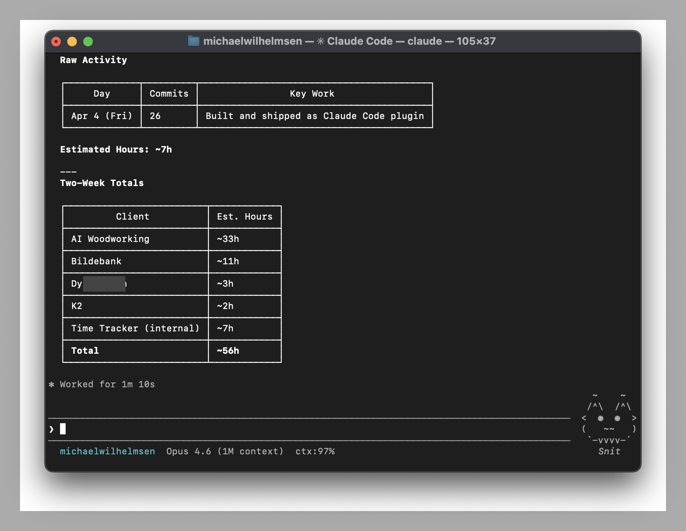

Git Timetrack silently logs your git activity and turns it into time reports, client summaries, and email drafts. No timers. No buttons. Just code.
> /plugin marketplace add michaelwilhelmsen/git-timetrack > /plugin install git-timetrack@git-timetrack > /timelog this week


It runs in the background, captures what matters, and gives you the reports when you need them.
No timers to start, no buttons to click. The plugin hooks into your git commands and logs everything automatically.
Claude translates commit messages into plain English and drafts complete emails. "Fix MutationObserver loop" becomes something your client can understand.
Estimates work hours from commit patterns and diff sizes. Commits close together count as continuous work. Isolated commits are estimated by scope.
Map repos to clients and get per-client breakdowns. Perfect for freelancers and agencies juggling multiple projects.
All data stays on your machine in plain JSON Lines. Nothing is sent anywhere. Delete it anytime. Grep it, pipe it, build on it.
Ask for reports conversationally. "Timelog last week for Acme in German, professional tone." Refine it in follow-up messages.
Install, code, and ask. That's it.
Two commands in Claude Code. The plugin hooks into your git workflow automatically. No config files, no setup wizard, no API keys.
Every git commit, checkout, merge, push, and pull is silently logged to a local file. You don't notice it's there.
Type /timelog and get a complete summary with time estimates, client breakdowns, and a draft email ready to send.
Three skills that cover the full workflow from tracking to billing.
Generate activity summaries, time estimates, and client-ready email drafts. Supports natural language time ranges and multiple languages.
/timelog this week for acme
/timelog last month, invoice format
/timelog in german, professional tone
Associate repositories with client names for accurate per-client reporting. Claude suggests mappings from your activity log.
/map-client
/map-client my-repo "Acme Corp"
Backfill past git history into the tracking log. Useful for repos created before the plugin was installed.
/import
/import last 2 weeks
/import /path/to/repo last month
Reports are a starting point. Ask Claude to adjust tone, combine bullets, exclude sections, or translate — like chatting with an assistant.
"Combine those first two bullets."
"Make it more formal."
"Skip the infrastructure work."
Local-first by design. No accounts, no cloud, no telemetry.
All data lives in ~/.git-timetrack/ as plain text. No database, no cloud sync.
Exclude repos from tracking by adding them to the ignore file. One repo name per line.
Remove the plugin with one command. Activity data is preserved so you can delete it on your own terms.
Every event is one line of JSON. Grep it, pipe it, or build your own tools.
Every git command runs through the hook handler, which captures the relevant metadata and appends it to the activity log.
{
"timestamp": "2025-03-28T14:23:01Z",
"event": "commit",
"repo": "acme-website",
"branch": "main",
"client": "Acme Corp",
"commit_hash": "a1b2c3d",
"commit_message": "fix: checkout crash on mobile",
"files_changed": 3,
"insertions": 42,
"deletions": 7
}
Two commands to install. Zero configuration. Works with every repo you touch in Claude Code.